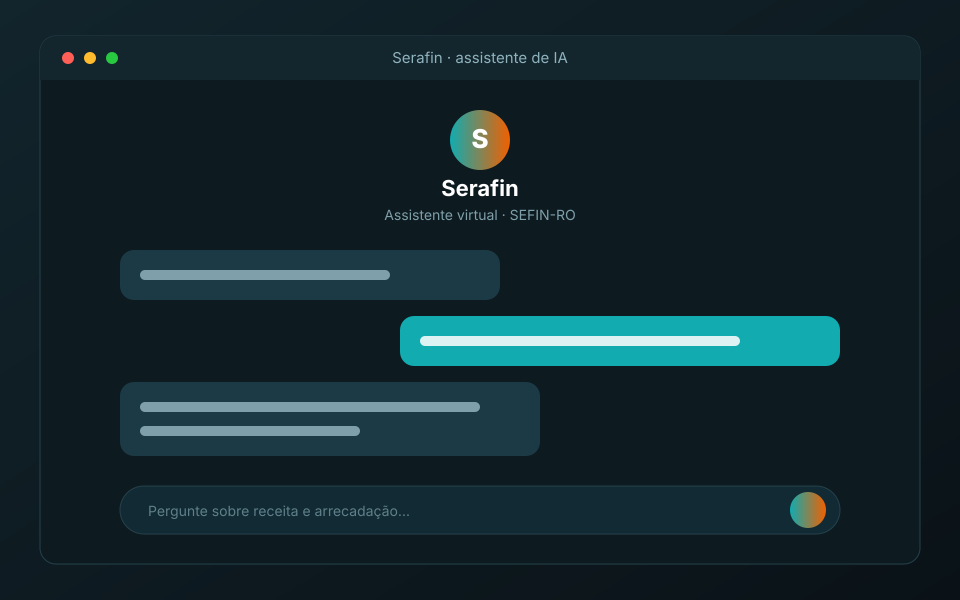
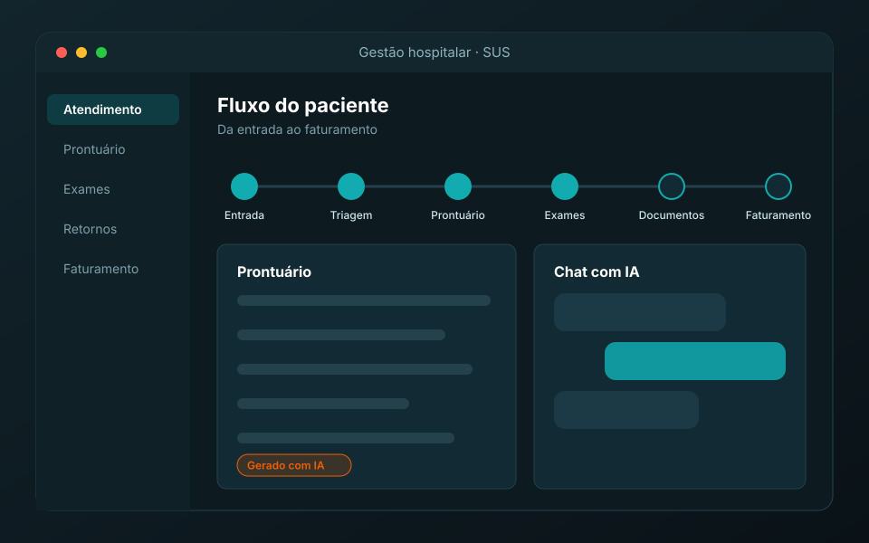
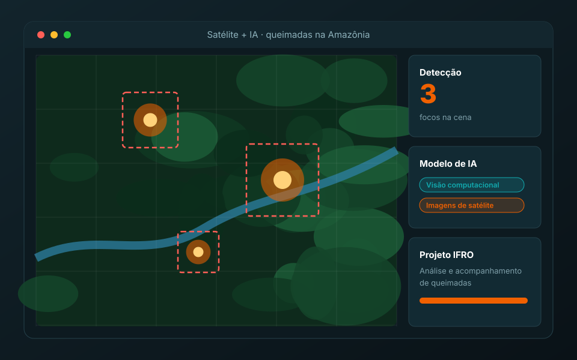
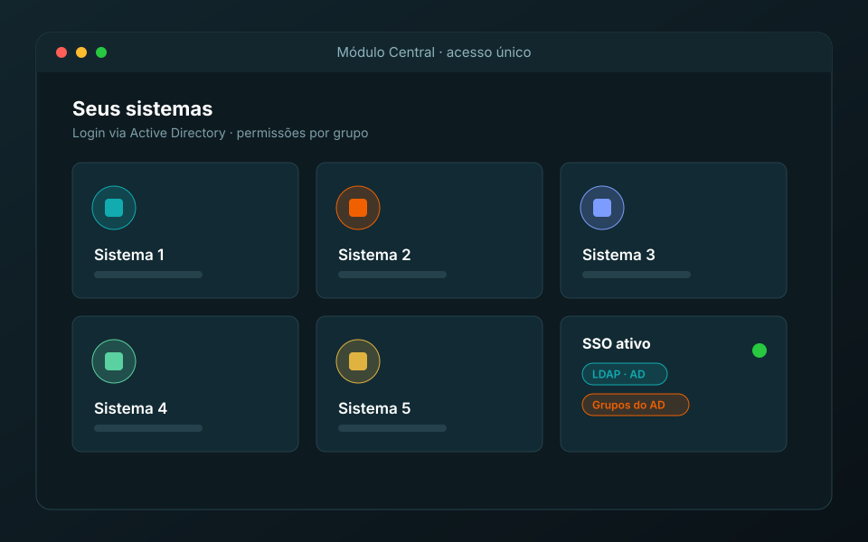
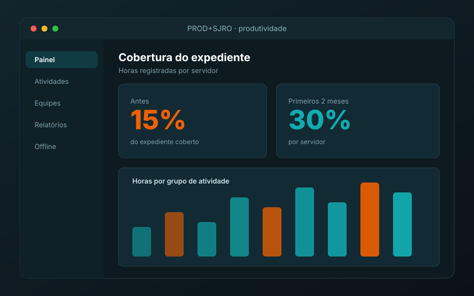
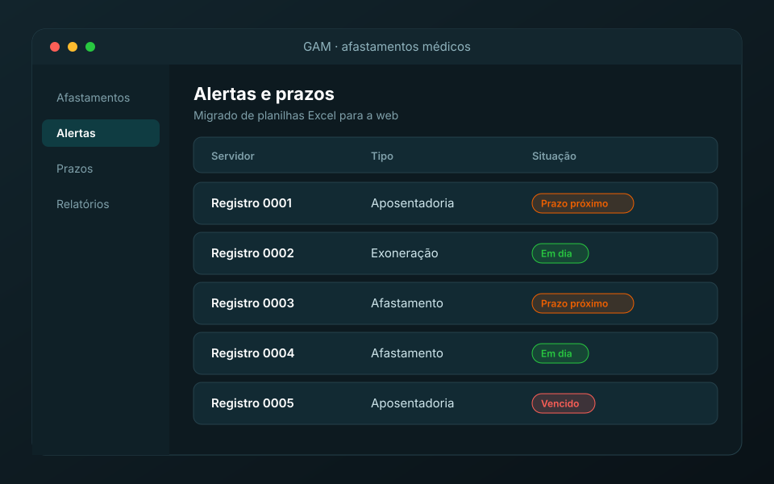

Desenvolvimento orientado por IA
LLMs e agentes de código do levantamento de requisitos ao deploy, com revisão de código e testes automatizados para manter a qualidade.
Programador Sênior · Java · Ruby on Rails · IA
Sou programador sênior full stack e bacharel em Sistemas de Informação, com mais de 6 anos de experiência no setor público e na saúde. Hoje atuo no NUCGE da Justiça Federal em Rondônia (TRF/SJRO), onde fundei o setor de desenvolvimento.
Minha especialidade é a engenharia de software com IA: uso IA generativa e agentes de código como parte central do processo — da especificação ao deploy — e mantenho a qualidade com revisão de código, testes automatizados e CI/CD. Também sou especialista em montar arquivos Markdown (.md): documentação técnica, especificações e arquivos de contexto e instrução para agentes de IA.
Thales Cantai
(69) 9 9953-3342
thalescantai54@gmail.com
A IA não é um adendo no meu trabalho: é o centro do processo. Uso LLMs e agentes de código em cada etapa — e entrego sistemas em produção, com revisão, testes e pipeline. Meu primeiro chat de IA foi o Serafin, no ar até hoje no site da SEFIN-RO.
.mdLLMs e agentes de código do levantamento de requisitos ao deploy, com revisão de código e testes automatizados para manter a qualidade.
Claude (agentes em VPS) e OpenAI Codex em nível avançado, com DevOps automatizado por IA.
Especialista em arquivos .md: READMEs, specs, ADRs e arquivos de instrução e contexto para agentes de IA.
Migração de planilhas Excel e Power Apps para sistemas web, com IA analisando processos e modelando dados — menos tempo de entrega.
Serafin (SEFIN-RO), chat de IA no sistema hospitalar da Santa Casa de Ji-Paraná e no Hospital João Paulo II, além de emissão de prontuários com IA.
Análise de estruturas e imagens com IA, usando SourceAFIS, InsightFace e FAISS.
Imagens de satélite com IA para detectar e analisar queimadas na Amazônia, em projeto para o IFRO.
CI/CD do zero: GitLab CI, Docker, auditoria de dependências e varredura de segredos, com deploy automático em 2 a 5 minutos.
Idealizei e arquitetei um sistema de gestão hospitalar que atende 8 municípios e vários hospitais, cobrindo o fluxo da entrada do paciente à emissão de documentos e ao faturamento: atendimento, prontuário, exames, retornos, controle de ausências e relatórios, com aderência às regras do SUS e chat com IA integrado. Modelagem PostgreSQL, APIs, permissões por perfil e deploy com Docker em Linux.
Desenvolvedor chefe no maior hospital de emergência de Rondônia, liderando a equipe e as decisões técnicas. Estruturei as bibliotecas locais e o banco de dados, transformei várias planilhas em sistemas — do cadastro ao atendimento, com chat de IA — e implementei a emissão de prontuários com IA.
Onde comecei a trabalhar com IA: criei o Serafin, meu primeiro chat de IA, em uso até hoje no site da SEFIN-RO (sefin.ro.gov.br), ligado à receita e à arrecadação do estado. Desenvolvimento e manutenção de sistemas e APIs e gestão de projetos com Java, JavaScript, Ruby on Rails e PHP.
Dashboards e painéis interativos em Power BI com dados fiscais, apoiando a análise e a tomada de decisão das equipes técnicas e gerenciais. Uso de Qlik Sense, Tableau e Oracle APEX para integração, visualização e exploração de dados.
Suporte técnico em hardware: formatações, atualizações de sistemas, instalação de softwares e equipamentos e manutenção preventiva e corretiva do parque tecnológico.
Faculdade Sapiens
Concluído em 2022Certificado de Power BI · Alura
Concluído em 2023Certificado de Full Stack Developer · OneBitCode
Concluído em 2024Sistemas reais em produção ou em desenvolvimento. As imagens são ilustrações dos projetos, sem dados reais.

Meu primeiro chat de IA, no ar até hoje no site da SEFIN-RO.

Atende 8 municípios, da entrada do paciente ao faturamento, com chat de IA.

Imagens de satélite + IA para detectar e analisar queimadas (IFRO).

Portal que reúne 5 sistemas com login via Active Directory e SSO.

Produtividade para ~2,5 mil usuários: cobertura do expediente de 15% para 30%.

Mais de 2 mil registros migrados do Excel para a web, com alertas e prazos.
Meu primeiro chat de IA, criado na GETIC/SEFIN e em uso até hoje no site da SEFIN-RO (sefin.ro.gov.br), ligado à receita e à arrecadação do estado.
Idealizado e arquitetado por mim na Santa Casa de Ji-Paraná: atende 8 municípios e vários hospitais, cobrindo atendimento, prontuário, solicitação de exames, retornos, controle de ausências, relatórios operacionais e faturamento, com aderência às regras do SUS e chat com IA integrado. No Hospital João Paulo II, também implementei a emissão de prontuários com IA.
Projeto para o IFRO que combina imagens de satélite e inteligência artificial para detectar e analisar queimadas na Amazônia.
Portal que reúne 5 sistemas do NUCGE (TRF/SJRO), com login via Active Directory (LDAP), SSO entre os sistemas e permissões por grupo do AD. Antes não havia acesso centralizado.
Reconstruí o sistema de produtividade de cerca de 2,5 mil usuários, antes em Power Apps (travava ao editar tarefas e no relatório mensal, e diretores não viam suas equipes). Painéis de horas, cobertura do expediente, grupos de atividade e complexidade; app Electron offline com sincronização (em desenvolvimento). Nos primeiros 2 meses, a cobertura do expediente por atividades registradas subiu de 15% para 30% por servidor.
Migração de mais de 2 mil registros de afastamentos médicos do Excel para a web, com rotinas de alertas de aposentadoria, exoneração e prazos.
Se você tem planilhas, processos manuais ou uma ideia que merece virar sistema, vamos conversar.
© 2026 Thales Cantai · Programador Sênior · Engenharia de software com IA